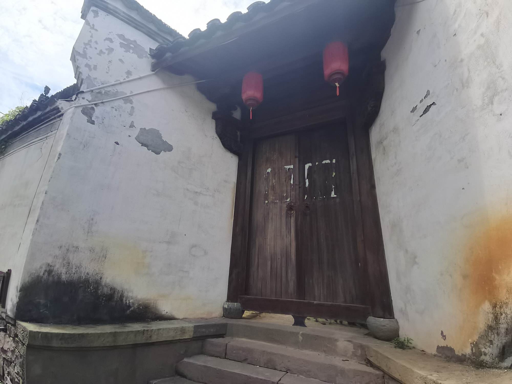
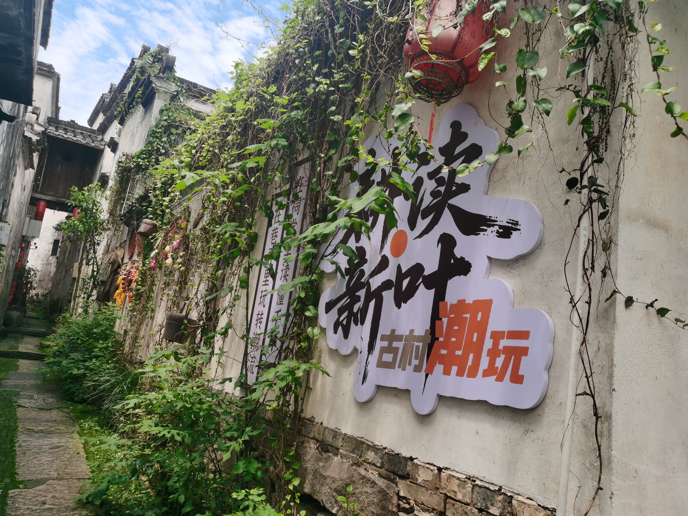

国保传统民居
院落层层，出入有序翠芳轩
翠芳轩是全国重点文物保护单位“新叶村乡土建筑”中的一座传统民居，也是一处格局特点较为清晰的四合式住宅。
01
两座四合式建筑的组合

翠芳轩由北侧两座四合式建筑组合而成。正房、前屋和两侧厢房围合出连续院落，厢房连接前后屋，南北两侧另有附属用房，使住宅形成较为完整的空间层次。
02
顺着街巷安排入口

翠芳轩南侧邻近村中主要街巷。为了兼顾街巷关系与住宅朝向，大门设置在住宅西侧支巷，南侧附属用房另开小门兼作门厅。入口的选择，体现了宅院布局对周边道路条件的回应。